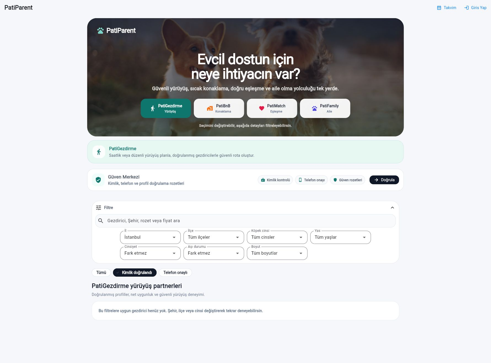
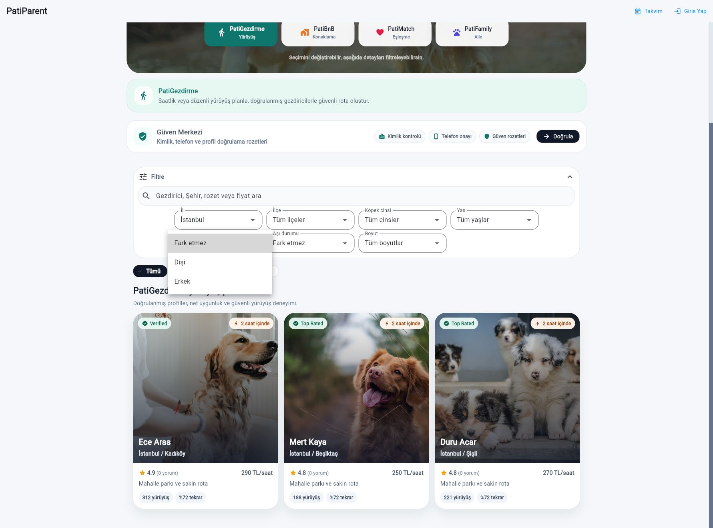
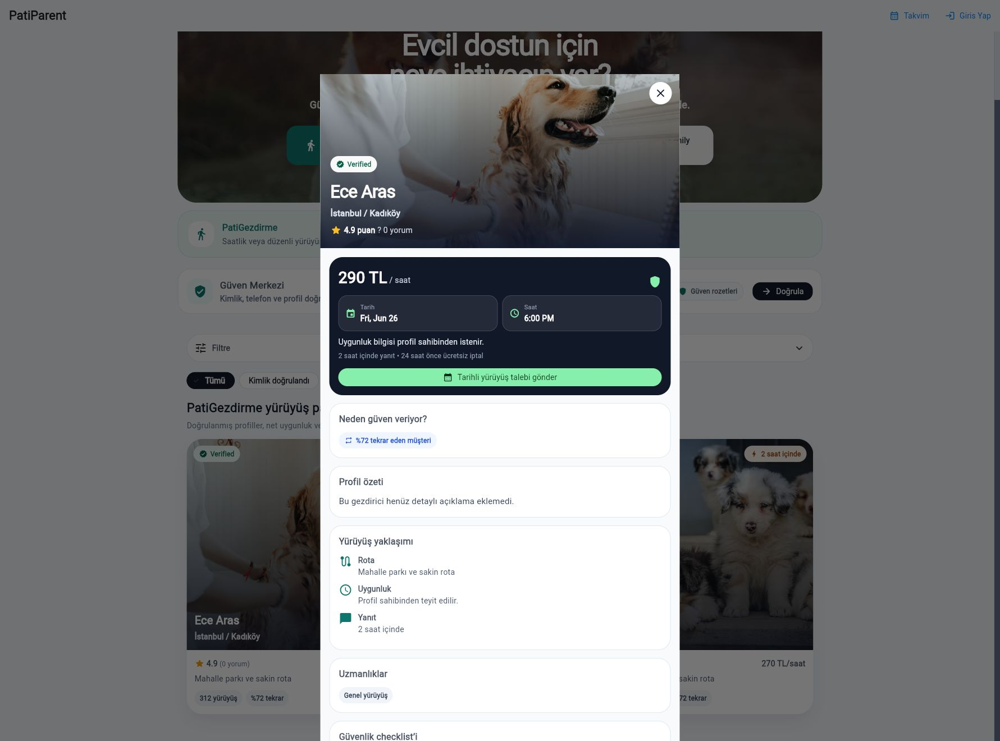
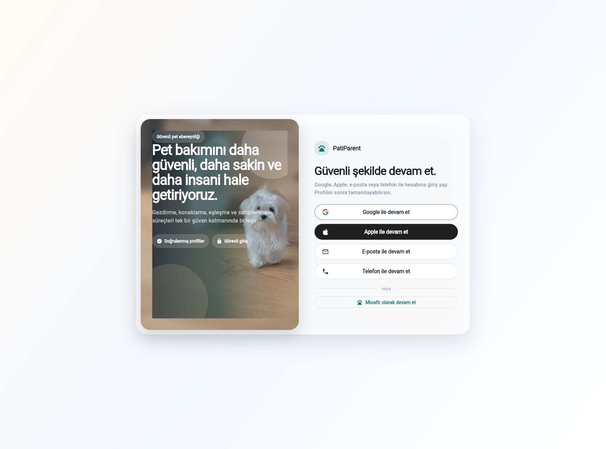
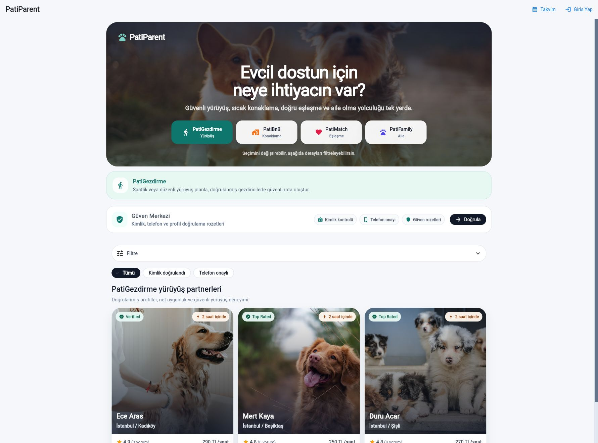
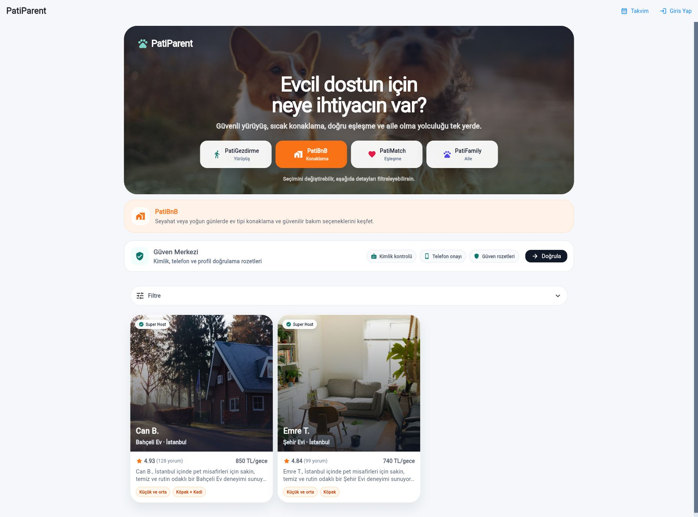
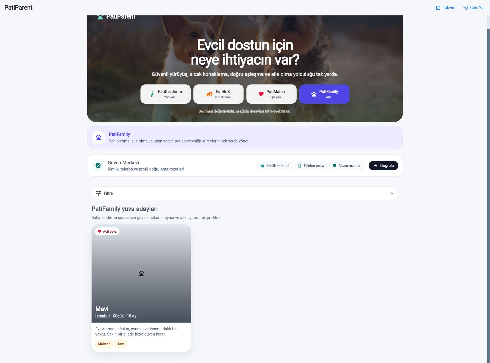
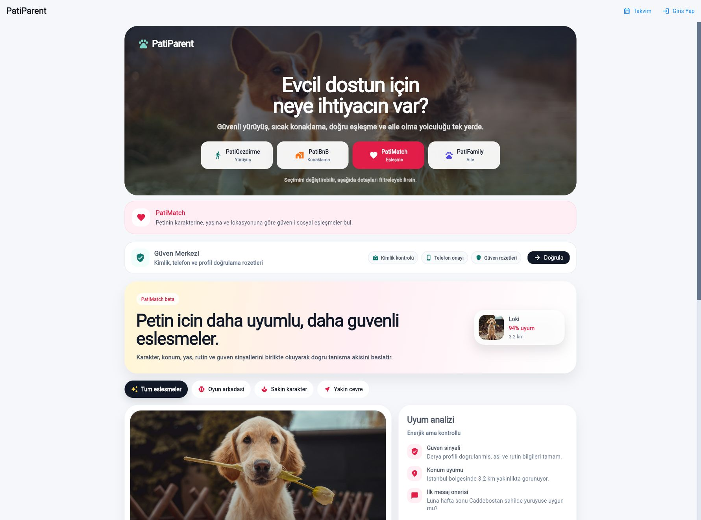

Bu rapor doküman ekranından değil, doğrudan patiparent.com canlı sitesinde gerçek kullanıcı gibi tıklayarak hazırlandı. Bankadaki süreç tasarım kayıtları gibi: hangi ekran açıldı, neye basıldı, ne beklendi, ne görüldü?







